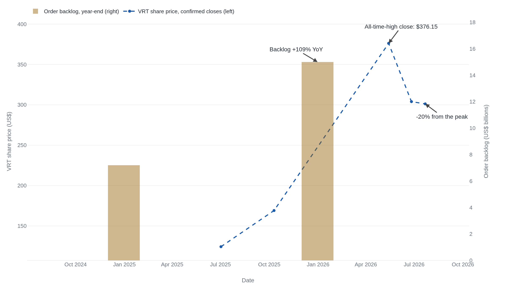
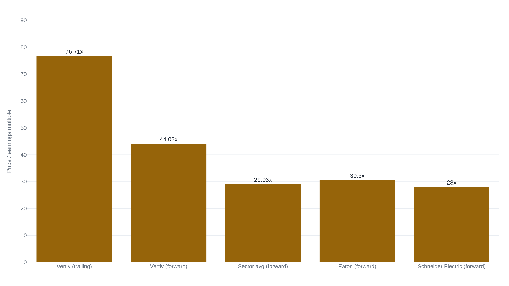

Vertiv's $15 billion backlog already exceeds its guided 2026 revenue
Organic orders grew 252% in the fourth quarter and the stock ran from $124 to a $376 peak on the same story, a backlog that has never yet been tested by a slowdown.
A backlog bigger than a year of guided sales
Vertiv's combined order backlog reached $15.0 billion at the end of 2025, up 109% from $7.2 billion a year earlier.1 The fourth quarter alone saw organic orders grow 252% year over year, and the company booked $2.90 of new business for every dollar of product it shipped that quarter.2 The stock built on the same story. It closed at $124.33 on July 2, 2025, and closed at $376.15 the following May, an all-time high, before slipping to $301.16 by July 22, 2026.3
A supplier that sits one layer below a capital-spending supercycle always reads two ways at once. Its order book can be proof that the spending above it is committed and already flowing down the chain, contracted rather than promised. Or it can be a customer base pulling orders forward, ahead of a capital plan that has not yet been tested by a downturn. Vertiv, which sells the power distribution, busway, switchgear, and liquid-cooling systems that AI data centers require, is the current test case for which reading is correct.
The variable that settles it is narrower than how enthusiastic hyperscalers sound on an earnings call: whether the orders Vertiv has already booked convert to shipped, recognized revenue at the pace its own backlog implies. Everything below tests that one variable against Vertiv's own filings, a named peer's numbers, and the price the market has already paid for the answer. None of it asks whether the stock is worth buying.
From orders to revenue: the chain the backlog has to survive
An order is business a customer commits to at a point in time. Shipped revenue is what Vertiv actually delivers and can recognize in a quarter. Backlog is the running difference between the two: everything ordered but not yet shipped. When new orders arrive faster than product goes out the door, backlog grows, and the ratio between the two is book-to-bill. Vertiv's fourth-quarter 2025 book-to-bill of approximately 2.9x means new orders came in at nearly three times the rate of that quarter's shipments, the reason the backlog nearly doubled year over year.2
Vertiv's own 10-K describes most of that backlog as firm: "the majority of the combined backlog as of December 31, 2025 is considered firm and is expected to be shipped within the next 12 to 18 months."1 Set against the company's own 2026 guidance of $13.5 billion to $14.0 billion in net sales, the backlog alone already covers the entire guided year, with 7% to 11% left over even without a single new order taken.14 That is real revenue visibility, and it is the strongest evidence in the filings that the demand is not a headline invented for an earnings call.
"Despite substantial order intake, pipeline continues to grow…no evidence of depletion."5 CEO Giordano Albertazzi, Q4 2025 earnings call
The same 10-K carries the qualifier that makes the firm number worth less than it looks. Vertiv states plainly that it does not believe its backlog estimates "are necessarily indicative of our net sales for any future period," because a customer can still cancel or reschedule.1 Management confirmed the practical version of that risk on the same call that produced the 252% orders figure: orders are "lumpy," volatile enough quarter to quarter that the company stopped guiding to them at all.5 Independent analysis of the data-center construction pipeline puts a number on the specific risk the caveat gestures at: close to half of planned U.S. data-center projects face delays or cancellations, mostly tied to power-infrastructure bottlenecks, the exact category Vertiv sells into.6 A delay is not a cancellation. But it does exactly what the 10-K warns about: it moves revenue recognition to a different period than the backlog implies, which is how a headline backlog number can be entirely real and still overstate next year's growth.
A sector-wide surge, not a Vertiv-only one
If Vertiv were the only supplier seeing this, the more likely explanation would be an idiosyncratic share gain or a single customer front-loading orders. Two named peers report the same shape of demand, which argues for a market-wide acceleration instead.
| Company | Metric | Period |
|---|---|---|
| Vertiv | Organic orders +252% YoY; backlog +109% YoY to $15.0B | Q4 2025 / FY2025 year-end |
| Eaton | Data-center orders +70% YoY; data-center revenue +40% YoY | Q3 2025 |
| Schneider Electric | Energy Management backlog +21% YoY to €21.3B; data centers 30% of revenue | FY2025 year-end |
Eaton reported data-center orders up roughly 70% and data-center revenue up roughly 40% in the third quarter of 2025.7 The company's full 2025 revenue reached $27.4 billion, up 10% organically.9 Schneider Electric's Energy Management backlog reached €21.3 billion, up 21% year over year, with data centers now 30% of total revenue. In the company's own words, that segment is expected "to lead growth with a market CAGR exceeding 10% through 2030, driven by artificial intelligence infrastructure buildout."8 Three separate electrical-infrastructure suppliers, each disclosing in its own filings, are describing the same acceleration in the same end market. That triangulation is worth more than any one company's earnings-call adjectives.
The demand pool underneath all three is sized by hyperscaler capital spending. Four of the largest, Amazon, Alphabet, Meta, and Microsoft, are projected to spend $725 billion combined on capital expenditure in 2026, up 77% from $410 billion in 2025, with Amazon's own 2026 budget alone approaching $200 billion.10 That pool is growing, but it is not being funded purely out of operating cash flow. A broader industry estimate that also counts Oracle puts 2026 hyperscaler capex at $602 billion, of which roughly $450 billion, about 75%, is earmarked for AI infrastructure specifically.11 The same analysis puts 2025 debt issuance across the group at $108 billion, with a further $1.5 trillion projected in the years ahead, noting that capex now "exceeds internal cash generation, forcing hyperscalers to the debt markets."11 The order flow reaching Vertiv, Eaton, and Schneider is broad based and real. Its size is increasingly underwritten by borrowed money rather than only by the cash the hyperscalers themselves generate, a fact one step further from Vertiv's own control than anything on its own balance sheet.
What the price has already paid for
Set beside the backlog, the stock's own path shows how far ahead of the operating numbers the price ran, and how much of that gap the July retracement closed.

Between the July 2025 close and the May 2026 peak, the stock rose about 203%, roughly twice the 109% the backlog it was tracking actually grew over the same stretch.31 The July 2026 retracement narrowed that gap without closing it. From the same July 2025 baseline, the stock is up about 142% through July 22, 2026, still outrunning the backlog's own growth rate by roughly 30%.3
The multiple the price carries makes the gap explicit. At 44.02 times forward earnings, Vertiv trades about 52% above the 29.03 sector average; at 76.71 times trailing earnings, it trades at roughly 2.6 times that average.3 Its two named peers sit close to the sector floor: Eaton at roughly 30.5 times forward earnings, Schneider Electric at roughly 28.6

The gap between Vertiv's multiple and its peers' has an arithmetic. A $301.16 share price at a 44.02 forward multiple implies the market is paying for about $6.84 of forward earnings per share, a derived figure, not a company-guided one. Apply Eaton's 30.5 multiple to that same $6.84 and the stock is worth about $209. Apply Schneider's 28 and it is worth about $192, a fall of roughly 30% to 36% with no change to a single dollar of the earnings estimate, produced purely by the multiple returning to where its two named peers already trade.36
The current multiple has no room for either half of Vertiv's own guidance to disappoint. It already assumes organic growth holds near the guided 29% to 31% for 2026, and that adjusted operating margin reaches the guided 22% to 23% range for 2026, up from 20.4% booked in 2025.45 That range implies a jump of up to 260 basis points in a single year, on the way to the 25% margin target the company has set for 2029.5 Both numbers can come in exactly as guided and the stock can still fall, because the price is not just betting on the backlog converting. It is betting on Vertiv converting that backlog more profitably than it has ever converted backlog before.
Where the demand narrows: geography and customers
The backlog's strength is not evenly spread. The Americas supplied 62% of Vertiv's 2025 revenue and grew fastest into 2026: first-quarter Americas revenue rose 53.1% year over year, 44.3% of it organic, the clearest signature of hyperscale data-center buildout inside the numbers.112 EMEA is 18% of revenue and moving the opposite direction. Management guided EMEA to "flat to down mid-single digits" for 2026.5 The first quarter already ran well past that guidance: EMEA revenue fell 20.3% year over year on a reported basis, 29.4% on the organic basis that shows Americas up 44.3%, several times steeper than the "mid-single digits" decline management had guided to.12 EMEA segment margin also compressed 450 basis points on volume deleverage in the fourth quarter of 2025.5 A single global backlog number is compatible with one region carrying nearly all of the growth and another actively shrinking.
A similar concentration runs through Vertiv's customer base. Analysts estimate roughly 45% of Vertiv's revenue comes from hyperscale and colocation customers and about 25% more from telecom, though Vertiv's own disclosures do not break out customer concentration at that level.13 That gap between an estimate and a disclosure matters here specifically. It means the fate of a meaningful share of the $15.0 billion backlog rests on the capital plans of a handful of companies. Those companies' own spending, as the hyperscaler capex figures above show, is itself increasingly financed by debt rather than only by their own cash flow.11 Vertiv's exposure to that concentration is inferred from analyst research, not confirmed in a filing, and that absence of company-level disclosure is itself a limit on how precisely the risk can be sized.
The next two quarters will show which reading is right. If EMEA's first-quarter decline is the leading edge of "flat to down," rather than a single quarter's wobble, that is the concentrated, cyclical order book the bear case describes. So is adjusted operating margin missing the guided 22% floor even once. If backlog keeps converting to revenue inside its stated 12-to-18-month window without a rescheduling, and margin clears 22% on its way toward 25%, the current multiple has more of a case than it looks like it does today. Either way, the answer shows up first in Vertiv's own filings, not in the stock.
Sources
- U.S. SEC / Vertiv Holdings Co · Form 10-K for fiscal year 2025 (filed 2026-02-13)
- U.S. SEC / Vertiv Holdings Co · Q4 2025 earnings release, Exhibit 99.1 to Form 8-K (filed 2026-02-11)
- stockanalysis.com · VRT price history and valuation data (accessed 2026-07-22)
- Vertiv Holdings Co · Q1 2026 earnings release (2026-04-22)
- Vertiv Holdings Co · Q4 2025 earnings call transcript (2026-02-11), via The Motley Fool
- Investing.com · "Vertiv: The Backlog Is Massive, The Margin Of Safety Is Not" (2026)
- Eaton Corporation plc · Q3 2025 earnings call transcript (2025-11-04), via Investing.com
- Schneider Electric · Full Year 2025 Results (2026)
- U.S. SEC / Eaton Corporation plc · Form 10-K for fiscal year 2025 (filed 2026)
- Value Add VC · "Big Tech's AI Capex in 2025: Microsoft, Google, Meta, Amazon, and the Spending Race" (2026)
- Introl · "Hyperscaler capex: $600B+ in 2026, AI infrastructure debt" (January 2026)
- U.S. SEC / Vertiv Holdings Co · Form 10-Q for the quarter ended 2026-03-31 (filed 2026-04-22)
- Seeking Alpha · "Vertiv: Mounting Worries Of Peak Growth And Peak Valuation" (June 2026)